import numpy as np
import pandas as pd
import seaborn as sns
import matplotlib.pyplot as plt
Funciones#
def Summary(data, sheet):
print(f"Hoja: {sheet}")
# Crear la tabla de resumen
resumen = {
"Cantidad de filas": data.shape[0],
"Cantidad de columnas": data.shape[1],
"Datos faltantes": data.isnull().sum().sum(),
"Filas duplicadas": data.duplicated().sum()
}
# Convertir el resumen en un DataFrame
ResumenHoja = pd.DataFrame(resumen, index=["Resumen"])
print("\nResumen:")
display(ResumenHoja)
print("\nEncabezado:")
display(data.head())
Cargado de datos#
data_url = 'https://docs.google.com/spreadsheets/d/1_KCCMLmD6jYINRbLJwud-moSgEkevpdJtc8VIbZuAVM/export?format=csv'
df = pd.read_csv(data_url)
df.head()
| Marital status | Application mode | Application order | Course | Daytime/evening attendance\t | Previous qualification | Previous qualification (grade) | Nacionality | Mother's qualification | Father's qualification | ... | Curricular units 2nd sem (credited) | Curricular units 2nd sem (enrolled) | Curricular units 2nd sem (evaluations) | Curricular units 2nd sem (approved) | Curricular units 2nd sem (grade) | Curricular units 2nd sem (without evaluations) | Unemployment rate | Inflation rate | GDP | Target | |
|---|---|---|---|---|---|---|---|---|---|---|---|---|---|---|---|---|---|---|---|---|---|
| 0 | 1 | 17 | 5 | 171 | 1 | 1 | 122.0 | 1 | 19 | 12 | ... | 0 | 0 | 0 | 0 | 0.000000 | 0 | 10.8 | 1.4 | 1.74 | Dropout |
| 1 | 1 | 15 | 1 | 9254 | 1 | 1 | 160.0 | 1 | 1 | 3 | ... | 0 | 6 | 6 | 6 | 13.666667 | 0 | 13.9 | -0.3 | 0.79 | Graduate |
| 2 | 1 | 1 | 5 | 9070 | 1 | 1 | 122.0 | 1 | 37 | 37 | ... | 0 | 6 | 0 | 0 | 0.000000 | 0 | 10.8 | 1.4 | 1.74 | Dropout |
| 3 | 1 | 17 | 2 | 9773 | 1 | 1 | 122.0 | 1 | 38 | 37 | ... | 0 | 6 | 10 | 5 | 12.400000 | 0 | 9.4 | -0.8 | -3.12 | Graduate |
| 4 | 2 | 39 | 1 | 8014 | 0 | 1 | 100.0 | 1 | 37 | 38 | ... | 0 | 6 | 6 | 6 | 13.000000 | 0 | 13.9 | -0.3 | 0.79 | Graduate |
5 rows × 37 columns
df.info()
<class 'pandas.core.frame.DataFrame'>
RangeIndex: 4424 entries, 0 to 4423
Data columns (total 37 columns):
# Column Non-Null Count Dtype
--- ------ -------------- -----
0 Marital status 4424 non-null int64
1 Application mode 4424 non-null int64
2 Application order 4424 non-null int64
3 Course 4424 non-null int64
4 Daytime/evening attendance 4424 non-null int64
5 Previous qualification 4424 non-null int64
6 Previous qualification (grade) 4424 non-null float64
7 Nacionality 4424 non-null int64
8 Mother's qualification 4424 non-null int64
9 Father's qualification 4424 non-null int64
10 Mother's occupation 4424 non-null int64
11 Father's occupation 4424 non-null int64
12 Admission grade 4424 non-null float64
13 Displaced 4424 non-null int64
14 Educational special needs 4424 non-null int64
15 Debtor 4424 non-null int64
16 Tuition fees up to date 4424 non-null int64
17 Gender 4424 non-null int64
18 Scholarship holder 4424 non-null int64
19 Age at enrollment 4424 non-null int64
20 International 4424 non-null int64
21 Curricular units 1st sem (credited) 4424 non-null int64
22 Curricular units 1st sem (enrolled) 4424 non-null int64
23 Curricular units 1st sem (evaluations) 4424 non-null int64
24 Curricular units 1st sem (approved) 4424 non-null int64
25 Curricular units 1st sem (grade) 4424 non-null float64
26 Curricular units 1st sem (without evaluations) 4424 non-null int64
27 Curricular units 2nd sem (credited) 4424 non-null int64
28 Curricular units 2nd sem (enrolled) 4424 non-null int64
29 Curricular units 2nd sem (evaluations) 4424 non-null int64
30 Curricular units 2nd sem (approved) 4424 non-null int64
31 Curricular units 2nd sem (grade) 4424 non-null float64
32 Curricular units 2nd sem (without evaluations) 4424 non-null int64
33 Unemployment rate 4424 non-null float64
34 Inflation rate 4424 non-null float64
35 GDP 4424 non-null float64
36 Target 4424 non-null object
dtypes: float64(7), int64(29), object(1)
memory usage: 1.2+ MB
Analisis exploratorio de datos#
Summary(df, 'df')
Hoja: df
Resumen:
| Cantidad de filas | Cantidad de columnas | Datos faltantes | Filas duplicadas | |
|---|---|---|---|---|
| Resumen | 4424 | 37 | 0 | 0 |
Encabezado:
| Marital status | Application mode | Application order | Course | Daytime/evening attendance\t | Previous qualification | Previous qualification (grade) | Nacionality | Mother's qualification | Father's qualification | ... | Curricular units 2nd sem (credited) | Curricular units 2nd sem (enrolled) | Curricular units 2nd sem (evaluations) | Curricular units 2nd sem (approved) | Curricular units 2nd sem (grade) | Curricular units 2nd sem (without evaluations) | Unemployment rate | Inflation rate | GDP | Target | |
|---|---|---|---|---|---|---|---|---|---|---|---|---|---|---|---|---|---|---|---|---|---|
| 0 | 1 | 17 | 5 | 171 | 1 | 1 | 122.0 | 1 | 19 | 12 | ... | 0 | 0 | 0 | 0 | 0.000000 | 0 | 10.8 | 1.4 | 1.74 | Dropout |
| 1 | 1 | 15 | 1 | 9254 | 1 | 1 | 160.0 | 1 | 1 | 3 | ... | 0 | 6 | 6 | 6 | 13.666667 | 0 | 13.9 | -0.3 | 0.79 | Graduate |
| 2 | 1 | 1 | 5 | 9070 | 1 | 1 | 122.0 | 1 | 37 | 37 | ... | 0 | 6 | 0 | 0 | 0.000000 | 0 | 10.8 | 1.4 | 1.74 | Dropout |
| 3 | 1 | 17 | 2 | 9773 | 1 | 1 | 122.0 | 1 | 38 | 37 | ... | 0 | 6 | 10 | 5 | 12.400000 | 0 | 9.4 | -0.8 | -3.12 | Graduate |
| 4 | 2 | 39 | 1 | 8014 | 0 | 1 | 100.0 | 1 | 37 | 38 | ... | 0 | 6 | 6 | 6 | 13.000000 | 0 | 13.9 | -0.3 | 0.79 | Graduate |
5 rows × 37 columns
Las columnas de Curriculum units(grade) en ambos semestres no tienen un redondeo universal en los datos por lo que se realizara ese redondeo a 2 decimas debido a que son notas
df['Curricular units 1st sem (grade)']=df['Curricular units 1st sem (grade)'].round(2)
df['Curricular units 2nd sem (grade)']=df['Curricular units 2nd sem (grade)'].round(2)
df.head()
| Marital status | Application mode | Application order | Course | Daytime/evening attendance\t | Previous qualification | Previous qualification (grade) | Nacionality | Mother's qualification | Father's qualification | ... | Curricular units 2nd sem (credited) | Curricular units 2nd sem (enrolled) | Curricular units 2nd sem (evaluations) | Curricular units 2nd sem (approved) | Curricular units 2nd sem (grade) | Curricular units 2nd sem (without evaluations) | Unemployment rate | Inflation rate | GDP | Target | |
|---|---|---|---|---|---|---|---|---|---|---|---|---|---|---|---|---|---|---|---|---|---|
| 0 | 1 | 17 | 5 | 171 | 1 | 1 | 122.0 | 1 | 19 | 12 | ... | 0 | 0 | 0 | 0 | 0.00 | 0 | 10.8 | 1.4 | 1.74 | Dropout |
| 1 | 1 | 15 | 1 | 9254 | 1 | 1 | 160.0 | 1 | 1 | 3 | ... | 0 | 6 | 6 | 6 | 13.67 | 0 | 13.9 | -0.3 | 0.79 | Graduate |
| 2 | 1 | 1 | 5 | 9070 | 1 | 1 | 122.0 | 1 | 37 | 37 | ... | 0 | 6 | 0 | 0 | 0.00 | 0 | 10.8 | 1.4 | 1.74 | Dropout |
| 3 | 1 | 17 | 2 | 9773 | 1 | 1 | 122.0 | 1 | 38 | 37 | ... | 0 | 6 | 10 | 5 | 12.40 | 0 | 9.4 | -0.8 | -3.12 | Graduate |
| 4 | 2 | 39 | 1 | 8014 | 0 | 1 | 100.0 | 1 | 37 | 38 | ... | 0 | 6 | 6 | 6 | 13.00 | 0 | 13.9 | -0.3 | 0.79 | Graduate |
5 rows × 37 columns
debemos tomar en cuenta que algunas de las variables numericas en realidad tienen categorias asignadas a cada uno de sus datos. Por lo que debemos tener cuidado al tratarlos
Se realizara primero el analisis de las variables numericas que no tienen categorias asignadas a ellas
numericas=['Previous qualification (grade)','Admission grade','Age at enrollment','Curricular units 1st sem (approved)','Curricular units 1st sem (credited)','Curricular units 1st sem (enrolled)','Curricular units 1st sem (evaluations)','Curricular units 1st sem (without evaluations)',
'Curricular units 2nd sem (approved)','Curricular units 2nd sem (credited)','Curricular units 2nd sem (enrolled)','Curricular units 2nd sem (evaluations)','Curricular units 2nd sem (without evaluations)','GDP']
df[numericas].describe()
| Previous qualification (grade) | Admission grade | Age at enrollment | Curricular units 1st sem (approved) | Curricular units 1st sem (credited) | Curricular units 1st sem (enrolled) | Curricular units 1st sem (evaluations) | Curricular units 1st sem (without evaluations) | Curricular units 2nd sem (approved) | Curricular units 2nd sem (credited) | Curricular units 2nd sem (enrolled) | Curricular units 2nd sem (evaluations) | Curricular units 2nd sem (without evaluations) | GDP | |
|---|---|---|---|---|---|---|---|---|---|---|---|---|---|---|
| count | 4424.000000 | 4424.000000 | 4424.000000 | 4424.000000 | 4424.000000 | 4424.000000 | 4424.000000 | 4424.000000 | 4424.000000 | 4424.000000 | 4424.000000 | 4424.000000 | 4424.000000 | 4424.000000 |
| mean | 132.613314 | 126.978119 | 23.265145 | 4.706600 | 0.709991 | 6.270570 | 8.299051 | 0.137658 | 4.435805 | 0.541817 | 6.232143 | 8.063291 | 0.150316 | 0.001969 |
| std | 13.188332 | 14.482001 | 7.587816 | 3.094238 | 2.360507 | 2.480178 | 4.179106 | 0.690880 | 3.014764 | 1.918546 | 2.195951 | 3.947951 | 0.753774 | 2.269935 |
| min | 95.000000 | 95.000000 | 17.000000 | 0.000000 | 0.000000 | 0.000000 | 0.000000 | 0.000000 | 0.000000 | 0.000000 | 0.000000 | 0.000000 | 0.000000 | -4.060000 |
| 25% | 125.000000 | 117.900000 | 19.000000 | 3.000000 | 0.000000 | 5.000000 | 6.000000 | 0.000000 | 2.000000 | 0.000000 | 5.000000 | 6.000000 | 0.000000 | -1.700000 |
| 50% | 133.100000 | 126.100000 | 20.000000 | 5.000000 | 0.000000 | 6.000000 | 8.000000 | 0.000000 | 5.000000 | 0.000000 | 6.000000 | 8.000000 | 0.000000 | 0.320000 |
| 75% | 140.000000 | 134.800000 | 25.000000 | 6.000000 | 0.000000 | 7.000000 | 10.000000 | 0.000000 | 6.000000 | 0.000000 | 7.000000 | 10.000000 | 0.000000 | 1.790000 |
| max | 190.000000 | 190.000000 | 70.000000 | 26.000000 | 20.000000 | 26.000000 | 45.000000 | 12.000000 | 20.000000 | 19.000000 | 23.000000 | 33.000000 | 12.000000 | 3.510000 |
df[numericas].hist(bins=30,figsize=(12,8))
plt.tight_layout()
plt.suptitle('Distribucion de variables numericas',y=1.02)
plt.show()

añadimos tambien las que representan porcentajes
sns.histplot(data=df, x='Unemployment rate', bins=30, kde=True)
plt.title('Distribución de la Tasa de desempleo')
plt.xlabel('Unemployment Rate (%)')
plt.ylabel('Frecuencia')
plt.axvline(0, color='red', linestyle='--', label='0%')
plt.legend()
plt.show()

sns.histplot(data=df, x='Inflation rate', bins=30, kde=True)
plt.title('Distribución de la Tasa de Inflación')
plt.xlabel('Inflation Rate (%)')
plt.ylabel('Frecuencia')
plt.axvline(0, color='red', linestyle='--', label='0%')
plt.legend()
plt.show()

realizamos boxplots para determinar la presencia de outliers en las variables numericas
for numerica in numericas:
sns.boxplot(data=df,y=numerica)
plt.title(f'Boxplot de {numerica}')
plt.show()


reducimos los outliers mediante el rango intercuartilico
df_copy=df.copy()
for col in numericas:
Q1=df_copy[col].quantile(0.25)
Q3=df_copy[col].quantile(0.75)
IQR=Q3-Q1
filtro = (df_copy[col] >= Q1 - 1.5 * IQR) & (df_copy[col] <= Q3 + 1.5 * IQR)
df_copy = df_copy[filtro]
df_copy[numericas].hist(bins=30,figsize=(12,8))
plt.tight_layout()
plt.suptitle('Distribucion de variables numericas',y=1.02)
plt.show()
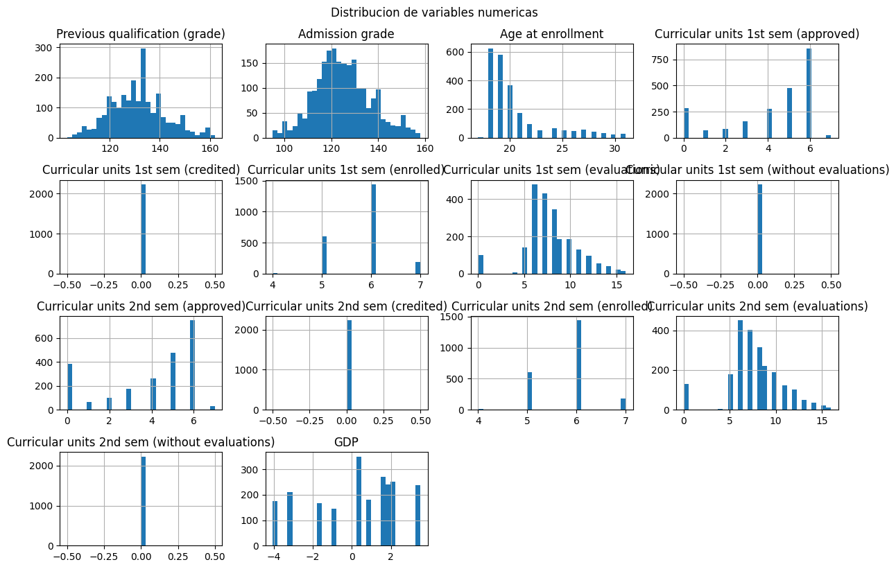
for numerica in numericas:
sns.boxplot(data=df_copy,y=numerica)
plt.title(f'Boxplot de {numerica}')
plt.show()
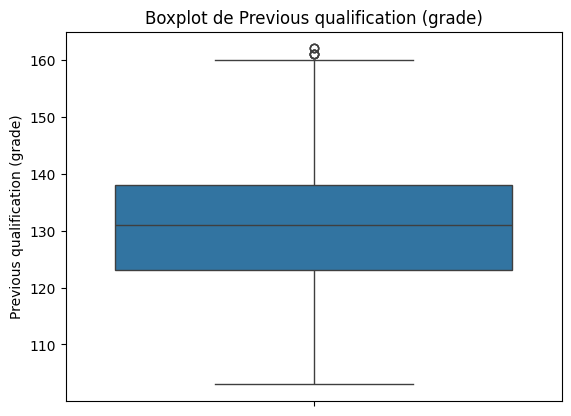
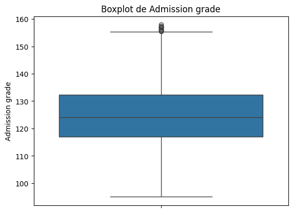
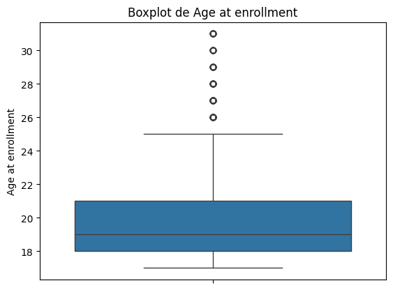
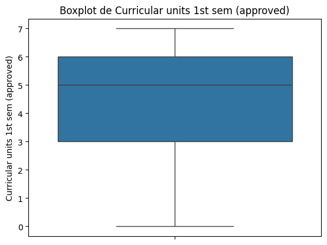
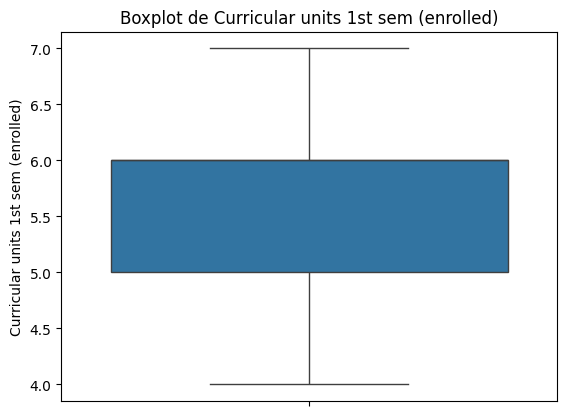
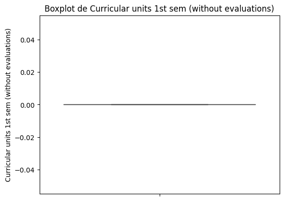
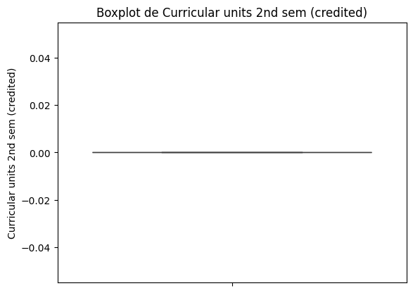
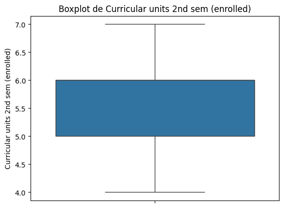
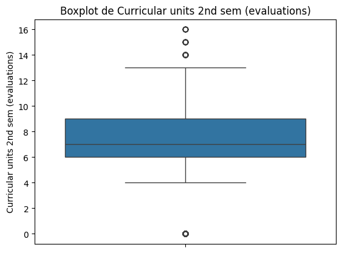
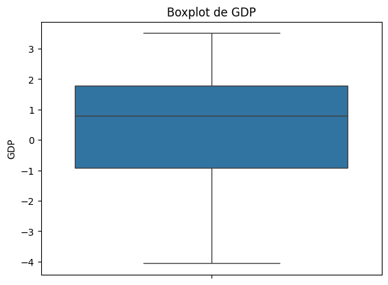
codificamos las variables que tienen categorias asociadas a ellas y las variables categoricas que existen en el dataframe
Variables binarias
binarias=['Daytime/evening attendance\t','Displaced','Educational special needs','Debtor','Tuition fees up to date','Gender','Scholarship holder','International']
for col in binarias:
df_copy[col]=df_copy[col].map({'yes': 1, 'no': 0, 'male': 1,'female': 0,'daytime': 1, 'evening': 0})
Variables nominales(con pocas categorias)
df_copy['Marital status'].value_counts(normalize=True)
Marital status
1 0.969072
2 0.021515
4 0.006275
5 0.002241
3 0.000448
6 0.000448
Name: proportion, dtype: float64
nominal_short=['Marital Status','Course','','Target']